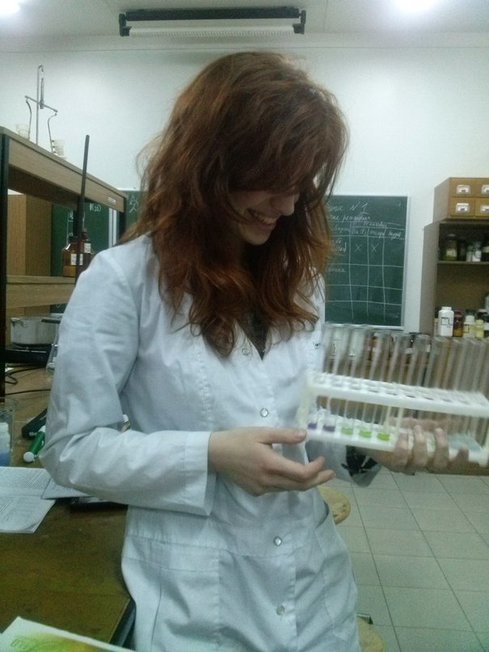
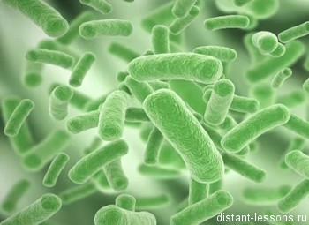

Страница о магистрской работе Дюбо Ю. В.
Автобиография
 В 2012 году поступила на дневное отделение Белорусского Государственного Университета на биологический факультет. В 2017 году выпустилась с кафедры молекулярной биологии, полученная специальность - Биолог (биотехнолог). Преподаватель биологии. Дипломную работа по теме "Функциональный анализ плазмиды pPA21A Pectobactrium atrosepticum" защитила на отлично. Летом того же года послупила в магистратуру БГУ на биологический факультет. Получаемая специальность - Биология. Тема магистерской дисертации: "Мобильные генетические элементы Pectobactrium atrosepticum". За время обучения участвовала в 4 международных конференциях, имею 6 публикаций тезисов и одну статью. Еще одна на данный момент находиться в печати, оринетировачно должна быть опубликована в 2018 году.
- Реферат
- Выпускная работа
- Научный руководитель ФИО научного руководителя